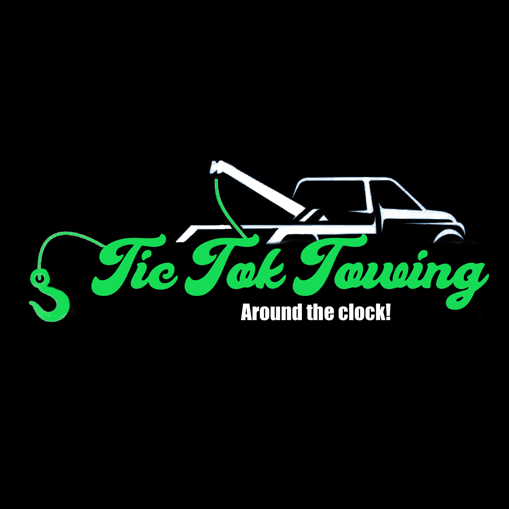

About Us
Founded in Southern Nevada, Tic Tok Towing was born out of a desire to provide reliable, efficient, and friendly towing services to our local community. We understand that vehicle troubles can be stressful, which is why we are committed to offering prompt assistance and peace of mind to every customer we serve.

Our team of experienced professionals is dedicated to ensuring that you receive the best possible service, whether you need a simple tow or more complex roadside assistance. We pride ourselves on our commitment to customer satisfaction and our ability to handle any situation with care and expertise.

At Tic Tok Towing, we believe in transparency and integrity. Our pricing is straightforward, with no hidden fees or surprises. We are fully licensed and insured, so you can trust that your vehicle is in good hands.